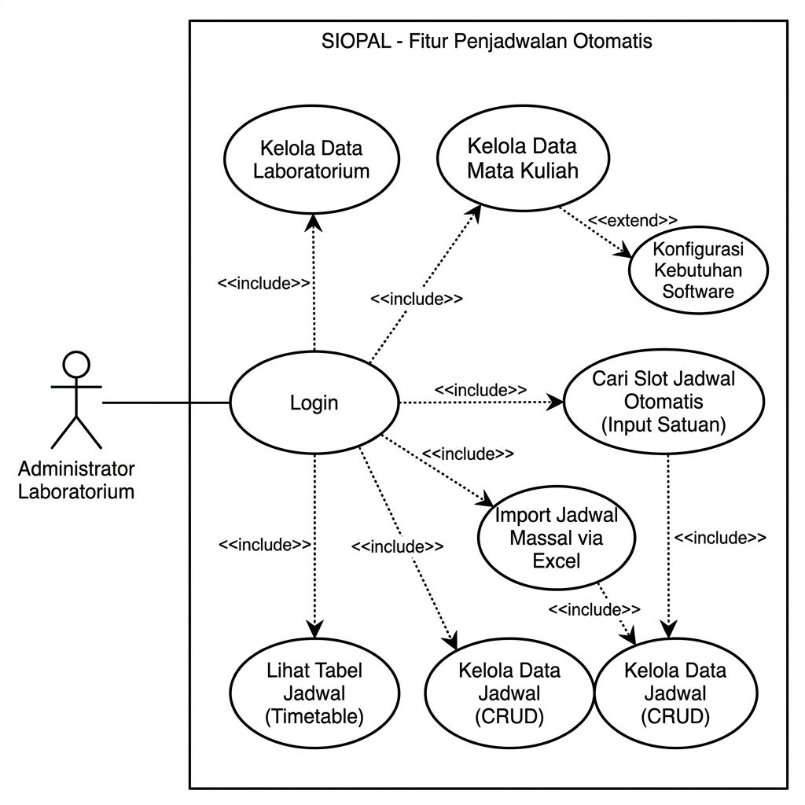
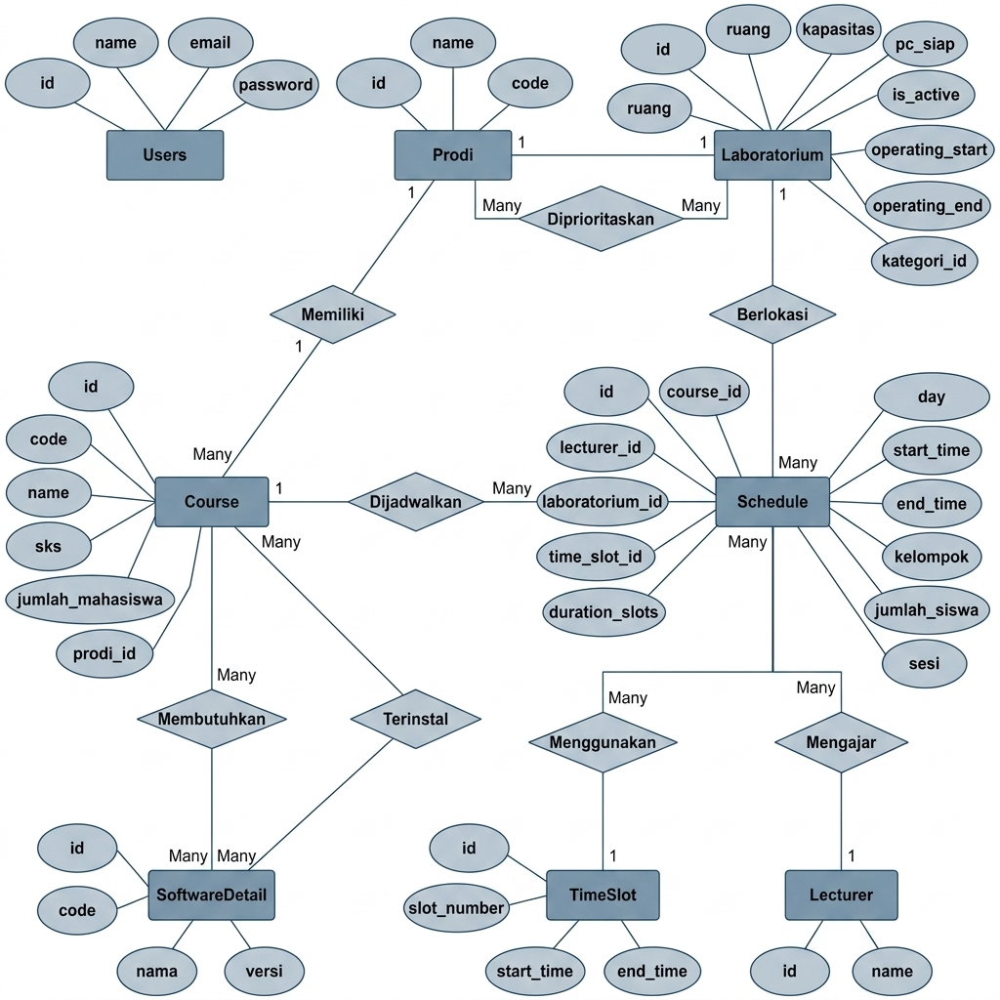
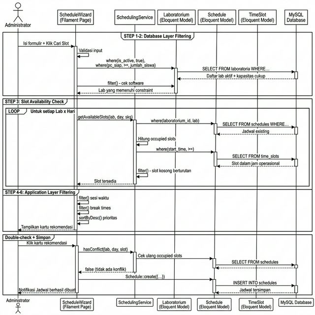

Studi Kasus: Laboratorium Komputer FIK — Universitas Dian Nuswantoro
Fakultas Ilmu Komputer — Universitas Dian Nuswantoro — 2025
Latar belakang, rumusan masalah, tujuan & manfaat
RAD, Eloquent Filtering, Eager Loading
RAD, pengumpulan data, kerangka pemikiran
UML: Use Case, ERD, Sequence Diagram
SchedulingService, UI Dashboard, Wizard
Black Box Testing & UAT (92,8%)
Hasil & saran penelitian selanjutnya
Penjadwalan praktikum di Lab Komputer FIK UDINUS masih dilakukan secara manual menggunakan spreadsheet.
💡 Masalah ini tergolong sebagai Constraint Satisfaction Problem (CSP) — membutuhkan solusi komputasional.
Lab harus memiliki semua software yang dibutuhkan mata kuliah
Jumlah PC siap pakai ≥ jumlah mahasiswa
Jadwal dalam rentang 07:00 — 21:00
Tidak boleh ada bentrokan jadwal pada lab & waktu yang sama
Setiap constraint di-implementasikan sebagai filter Eloquent berlapis — total 6 tahap filtering berurutan
Menghasilkan fitur rekomendasi slot waktu valid yang bebas konflik menggunakan Eloquent Query Filtering berlapis.
Efisiensi administrator — otomatisasi pencarian slot yang rumit. Optimalisasi aset lab — utilisasi ruangan & PC.
Referensi teknis Eloquent tingkat lanjut — implementasi CSP pada framework Laravel.
Metode pengembangan yang menekankan siklus singkat (30–90 hari) & penggunaan prototipe.
Sumber: (Besin, 2023) — (Lukman Santoso & Juni Amanullah, 2022)
where(), whereHas(), whereBetween()Sumber: (Akhdani & Wijayanto, 2022)
with() untuk memuat relasi sekaligusSumber: (Harahap, 2022) — (Krisna et al., 2024)
| Komponen CSP | Implementasi SIOPAL |
|---|---|
| Variabel | Jadwal (kombinasi Lab + Hari + Slot) |
| Domain | Semua kemungkinan Lab × Hari × Slot |
| Constraint | 6 tahap Eloquent Filtering (berlapis) |
| Solusi | Assignment yang memenuhi SEMUA constraint |
Wawancara dengan koordinator laboratorium untuk mengidentifikasi Business Rules:
Tinjauan literatur untuk fondasi teknis:
| Kategori | Data | Keterangan |
|---|---|---|
| INPUT | Program Studi | Menentukan prioritas lab & daftar matkul |
| Mata Kuliah + SKS | Menentukan kebutuhan software & durasi slot | |
| Jumlah Mahasiswa | Constraint kapasitas (PC ≥ mahasiswa) | |
| Sesi Waktu | Pagi / Siang / Malam | |
| OUTPUT | Lab, Hari, Jam | Rekomendasi 100% bebas konflik |
Formulir wizard reaktif (Livewire) → kartu rekomendasi per hari
Upload Excel → triple nested loop → preview status OK/Warning/Error
Aktor: Administrator (Laboran)

Arsitektur data dengan tabel pivot untuk relasi Many-to-Many:

Alur interaksi dari ScheduleWizard ke SchedulingService ke Database:
Double-check: Saat admin memilih kartu rekomendasi, sistem melakukan pengecekan konflik ulang sebelum menyimpan.

Eloquent where('pc_siap', '>=', $count)
Eloquent whereHas('software') + COUNT
Query jadwal existing → cek N slot berturutan
Collection filter berdasarkan range pagi/siang/malam
Overlap detection: start < breakEnd AND end > breakStart
Lab prioritas di atas, lalu by waktu mulai ascending
Constraint statis (kapasitas, software) → DB layer | Constraint dinamis (sesi, break, konflik) → App layer
Halaman utama setelah login menampilkan widget statistik real-time:
Data diambil real-time via Eloquent query. Dilindungi sistem otorisasi Gate.
Dashboard SIOPAL
Widget statistik + Kalender Akademik
→ Demo langsung akan ditunjukkan
Fitur inti penelitian — antarmuka penjadwalan otomatis dengan Livewire untuk interaksi real-time:
Setiap kartu menampilkan: Lab, Kapasitas PC, Waktu Mulai-Selesai, dan status prioritas prodi
Schedule Wizard
Formulir input + Kartu rekomendasi
→ Demo langsung akan ditunjukkan
Memproses ratusan jadwal sekaligus dengan algoritma cerdas:
$usedSlotNumbers untuk menghindari query berulang🟢 OK — Berhasil diplot | 🟡 Warning — Plot berhasil, ada ketidaksesuaian | 🔴 Error — Gagal diplot
Import Massal
Upload Excel → Preview → Confirm
→ Demo langsung akan ditunjukkan
Visualisasi jadwal dalam format grid tabel yang intuitif:
Administrator dapat langsung memverifikasi bahwa tidak ada tumpang tindih jadwal secara visual.
Timetable Grid
Grid per lab × hari × slot waktu
→ Demo langsung akan ditunjukkan
30 skenario uji — Fungsionalitas, Constraint, Import Massal, Edge Cases
| Kategori Pengujian | Jumlah Skenario | Berhasil | Gagal | % |
|---|---|---|---|---|
| Fungsionalitas Antarmuka | 6 | 6 | 0 | 100% |
| Validasi Constraint | 8 | 8 | 0 | 100% |
| Import Massal | 4 | 4 | 0 | 100% |
| Skenario Batas (Edge Cases) | 4 | 4 | 0 | 100% |
| Uji Algoritma Penjadwalan | 8 | 8 | 0 | 100% |
| TOTAL | 30 | 30 | 0 | 100% |
✅ Seluruh 30 skenario menghasilkan status VALID — tingkat keberhasilan 100%
Responden: 35 orang (Staff Lab & Dosen FIK UDINUS) — 19 pertanyaan, Skala Likert 1–5
Skor: 3.084 / 3.325 (Skor Ideal)
Efisiensi menjadi poin tertinggi (93,0%) — pengguna merasakan pengurangan waktu yang signifikan.
Sesi Tanya Jawab
Dimas Daffa Ernanda — A11.2022.14079
Teknik Informatika — UDINUS 2025